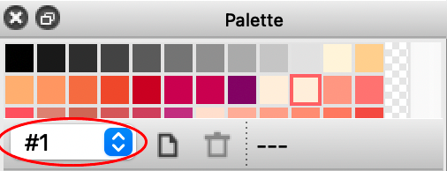
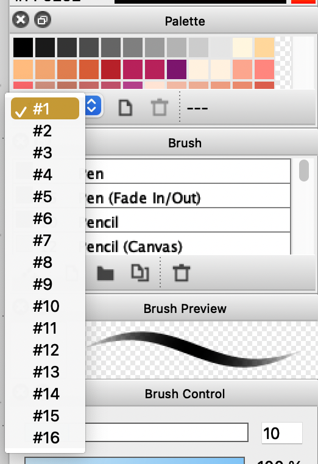
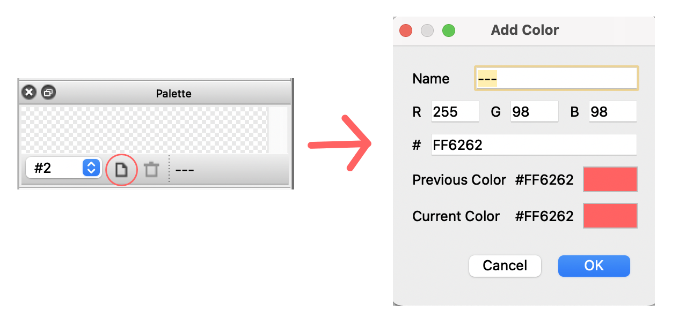
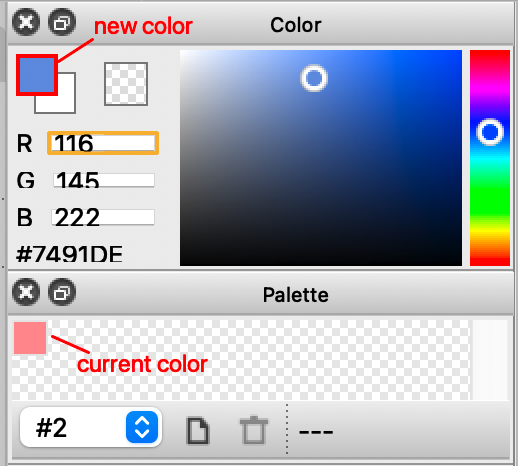
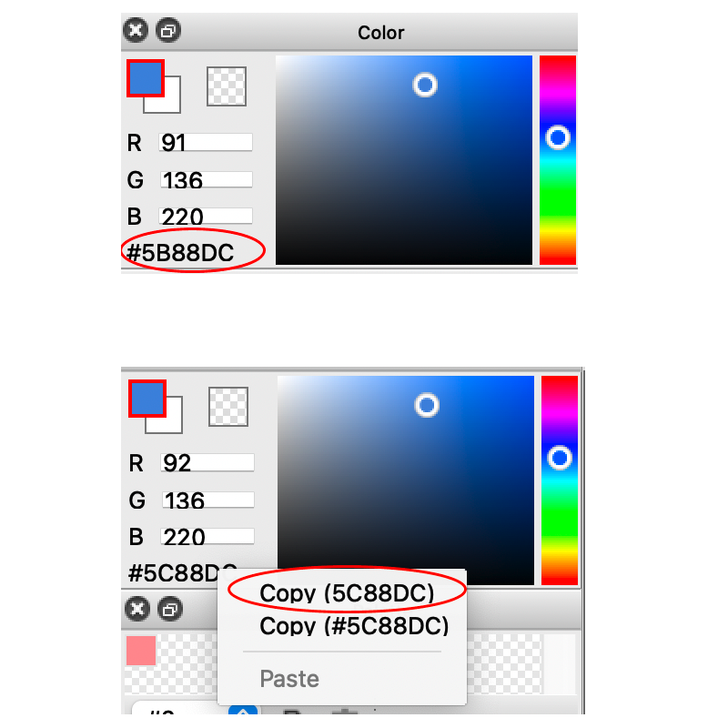
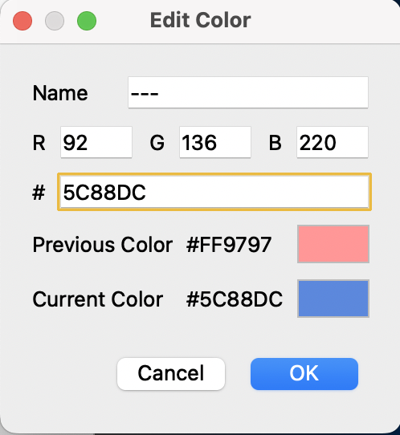

Color palettes allow you to save sets of colors to use across multiple illustrations and can be found in the "Palette" window. FireAlpaca offers spaces for 16 palettes. This tutorial shows you how to make a custom color palette, then to edit existing colors in a palette.
In the "Palette" window, go to the dropdown menu and select a number to start a new palette. By default, the window will be open to the preset color palette.

To start a new palette without editing or deleting preset colors, select a different slot number. Numbers other than #1 will be blank by default.

Select a color that you would like to add in the "Color" window, or use the "Eyedropper Tool" to select a color from the canvas.
Add the selected color to the palette by selecting the "Add Color" icon. The icon is located next to the dropdown menu and appears as a page with one folded corner. After selecting the icon, a popup window titled "Add Color" will appear.

In the popup window, fill in the "Name" space to name this color in your palette. The space will be prepopulated by three dashes ("---") by default. You may also leave the space blank. Select "OK" to add the color to the palette.
To edit a color after it has been added to a palette, first select the new color in the "Color" window.

After the new color has been selected, click the hex code and select the first copy option (without the pound sign (#)). The hex code consists of 6 characters after the pound sign (#) which appears in the lower left-hand corner of the "Color" window.

Double-click on the color in the palette that you would like to change. This will open the "Edit Color" window, which looks the same as the "Add Color" window except the title.
Paste the hex code in the space next to the pound sign (#). Select "OK" to save changes.

Repeat steps for the rest of the desired colors to build your color palette.
You can now create custom color palettes and edit colors in existing palettes.